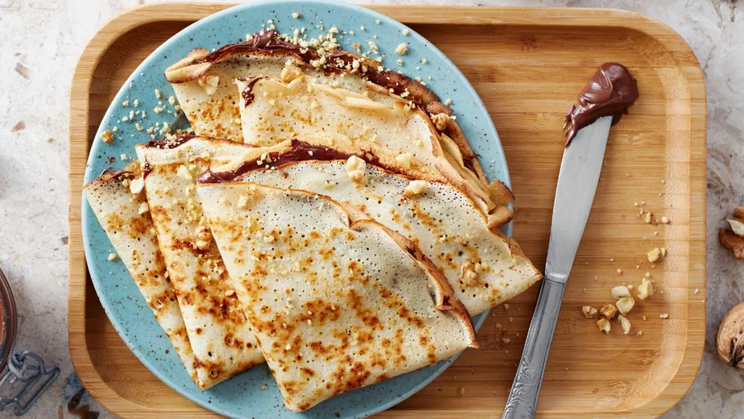
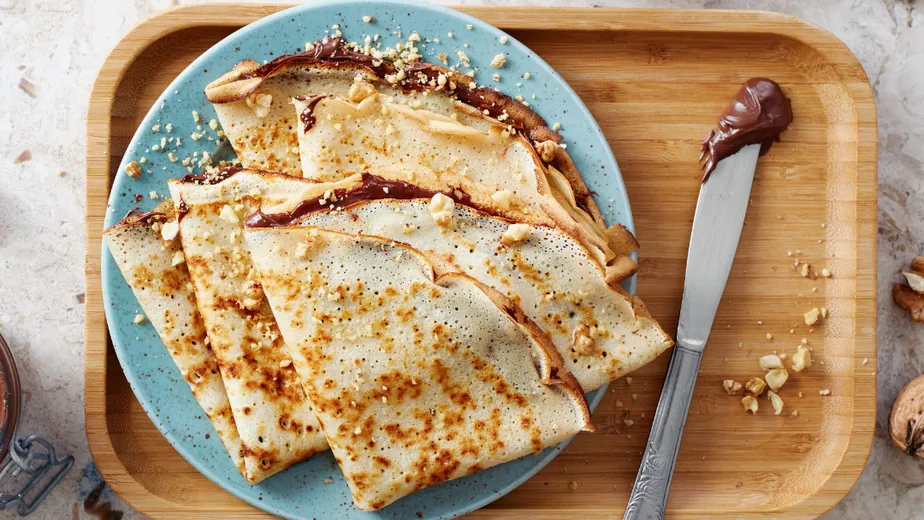
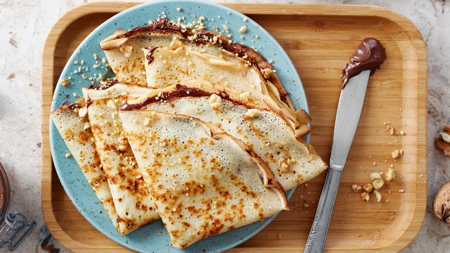

Nossa Historia
A Casa Bauducco é conhecida por proporcionar uma experiência agradável aos amantes de café e pães, com um toque de tradição e
qualidade que acompanha a marca Bauducco ao longo de sua história.
 

A Casa Bauducco é conhecida por proporcionar uma experiência agradável aos amantes de café e pães, com um toque de tradição e
qualidade que acompanha a marca Bauducco ao longo de sua história.
